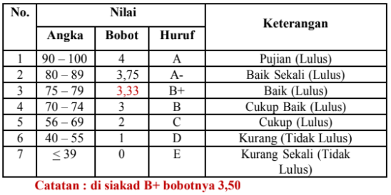

PROSEDUR PENYELESAIAN STUDI MAHASISWA
Sebagai syarat untuk lulus menjadi Sarjana (S1) Pendidikan, mahasiswa Fakultas Tarbiyah dan Tadris Universitas Islam Negeri Fatmawati Sukarno Bengkulu diwajibkan membuat sebuah Tugas Akhir atau karya ilmiah dalam bentuk Skripsi. Skripsi merupakan karya tulis mahasiswa mengenai hasil penelitian yang dilaksanakan sesuai dengan proposal skripsi yang telah dinilai dan disetujui. Proposal skripsi merupakan suatu tulisan yang harus dipersiapkan sebagai syarat untuk dapat melakukan kegiatan dan penyusunan laporan skripsi. Proposal skripsi merupakan Cetak Biru Perencanaan (blueprint) skripsi yang menjadi kerangka acuan bagi mahasiswa dalam merencanakan, melaksanakan dan menyelesaikan penulisan skripsi.
Ujian Tugas Akhir (Munaqasah Skripsi)
a. Munaqasyah merupakan ujian untuk mempertanggungjawabkan karya ilmiah dalam bentuk skripsi atau tugas akhir lainnya untuk meraih gelar sarjana;
b. Munaqasyah diselenggarakan dalam bentuk majelis/sidang yang terdiri orang 4 orang penguji. (Ketua, Sekretaris, Penguji 1 (Utama), Penguji 2 (Anggota);
c. Ketua sidang adalah dosen dengan jabatan Lektor Kepala atau lektor dengan gelar Doktor;
d. Sidang munaqasyah diselenggarakan oleh jurusan/program studi dibawah tanggung jawab Wakil Dekan I;
e. Ketua jurusan/prodi mengusulkan tim penguji yang kompeten dalam bidang metodologi dan substansi skripsi. Sedangkan ketua dan sekretaris sidang munaqasyah diutamakan ditunjuk dari Pembimbing I dan Pembimbing II;
f. Sebelum pelaksanaan munaqasyah jurusan/program studi berkoordinasi dengan pengelola akademik untuk mengecek kelengkapan dan persyaratan-persyaratan yang harus dipenuhi oleh peserta munaqasyah;
g. Mahasiswa yang berhak mengikuti ujian skripsi (munaqasyah) adalah yang memenuhi ketentuan sebagai berikut:
1. Telah lulus semua mata kuliah;
2. Mata kuliah skripsi telah didaftarkan pada siakad (KRS);
3. Telah lulus ujian komprehensif;
4. IPK minimal 2,00;
5. Telah menyelesaikan penulisan skripsi beserta dokumen kelengkapannya’
6. Telah memiliki sertifikat TOEFL dan TOAFL dengan ketentuan:
- Skor TOEFL 400 bagi semua program studi, kecuali Program Studi Bahasa Inggris, skor yang harus dipenuhi sebesar 450.
- Skor TOAFL 400 bagi semua program studi, kecuali Program Studi Pendidikan Bahasa Arab (PBA) skor yang harus dipenuhi sebesar 450.
- Telah terpenuhi persyaratan SKEK (Surat Keterangan Ekstra Kurikuler) minimal 100 SKEK, yang ditandatangani Ketua Tim SKEK dan diketahui oleh Wakil Dekan III.
7. Telah lunas pembayaran uang kuliah tunggal sampai dengan semester berjalan;
8. Lulus baca-tulis Alquran (melampirkan sertifikat dari PUSQIK).
Pengajuan Pendaftaran Ujian Skripsi
Mekanisme pengajuan pendaftaran ujian skripsi dilaksanakan melalui prosedur sebagai berikut:
a. Mahasiswa telah menyelesaikan semua mata kuliah yang dipersyaratkan untuklulus Sarjana (S1) Pendidikan dari Prodi. (Transkrip Nilai yang telah di validasi oleh pengelola Nilai akademik)
b. Mahasiswa telah menyelesaikan kegiatan penelitian dengan bukti keterangan penelitian dari tempat meneliti yang dilaksanakan Minimal 1 Bulan dan proses pembimbingan skripsi dengan dosen pembimbing minimal 8 (Delapan) kali yang dibuktikan dengan tanda tangan dosen pembimbing pada Kartu Pembimbingan Skripsi.
c. Naskah skripsi mahasiswa yang telah disetujui untuk diujikan disahkan oleh 2 (dua) orang dosen pembimbing.
d. Penyerahan naskah skripsi kepada tim penguji selambat-lambatnya 3 (tiga) hari sebelum pelaksanaan ujian skripsi. Jika naskah belum diserahkan dalam waktu yang ditentukan maka pelaksanaan ujian skripsi akan dijadwalkan ulang.
Mahasiswa mendaftarkan diri untuk mengikuti ujian skripsi kepada pengelola Prodi dengan menyerahkan persyaratan sebagai berikut:
1) Pra-transkrip akademik yang telah ditandatangani oleh pengelola akademik sebagai bukti telah lulus semua mata kuliah;
2) Bukti pelunasan SPP pada semester berjalan;
3) Salinan KRS semester berjalan yang mencantumkan mata kuliah skripsi;
4) Kartu kendali seminar proposal yang sudah ditangani oleh Koordinator ProgramStudi;
5) Kartu pembimbingan skripsi yang telah ditanda tangani oleh dosen pembimbing;
6) Naskah skripsi yang telah disetujui dosen pembimbing sebanyak 5 (lima)eksemplar;
7) Salinan sertifikat TOEFL dan memperlihatkan sertifikat aslinya;
8) Nilai ujian komprehensif asli;
9) SKEK yang telah ditandatangan oleh pejabat yang berwenang;
10) Surat pernyataan bahwa skripsi yang dibuat tidak menjiplak karya orang lain atau dibuat orang lain asli diatas materai 10.000;
11) Photo copy KTM;
12) Photo copy KTP/KK;
13) Photo copy ijazah SD, SMP, SLTA.
f. Mahasiswa mengisi formulir pendaftaran ujian skripsi;
g. Pengelola akademik Prodi menyampaikan nama mahasiswa yang memenuhi syarat untuk munaqasyah (sebagaimana disebutkan pada butir 6) dan penetapan dosen penguji (sebagaimana disebutkan pada butir 8) kepada Jurusan;
h. Jurusan menyusun jadwal dan tempat pelaksanaan ujian skripsi;
i. Jurusan mengumumkan jadwal dan tempat pelaksanaan ujian;
j. Setelah selesai pelaksanaan munaqasyah skripsi sekretaris penguji menyampaikan berkas hasil munaqasyah kepada pengelola akademik prodi.
Persyaratan Ujian Skripsi
1. Mahasiswa dapat megikuti ujian Skripsi apabila mahasiswa telah memiliki karya ilmiah yang telah dipublis di jurnal ilmiah terakreditasi (dibuktikan jurnal yang sudah publis pada jurnal yang bersangkutan bukan LOA);
2. Mahasiswa telah melaksanakan bimbingan Skripsi/ Hasil Penelitian dengan pembimbing 1 minimal lima (5) kali dan pembimbing 2 lima (5) kali di buktikan dengan kartu bimbingan yang telah di tanda tangani oleh pembimbing dan ditanda tangan oleh ketua jurusan;
3. Penulisan karya ilmiah harus mengacu pada format sitasi computerized;
4. Mahasiswa sudah menghadiri ujian munaqosyah sebagai peserta minimal tiga (3) kali lintas prodi (berdasarkan jumlah pertemuan bukan jumlah mahasiswa yang diujikan dan dibuktikan dengan daftar hadir yang telah ditanda tangani oleh koordinator Program Studi;
Pelaksanaan Ujian Skripsi
Mekanisme pelaksanaan ujian skripsi mahasiswa dilaksanakan melalui prosedur sebagai berikut:
1. Ujian skripsi dilaksanakan sesuai dengan jadual yang ditetapkan oleh fakultas sesuai dengan kalender akademik;
2. Pelaksanaan ujian skripsi dihadiri oleh mahasiswa yang akan diuji dan 4 (empat) orang dosen penguji dengan rincian: 1 (satu) orang dosen sebagai ketua tim penguji (Pembimbing1), Sekretaris serta dan 2 (dua) orang dosen sebagai penguji utama dan penguji anggota;
3. Apabila dosen pembimbing pertama dan dosen penguji berhalangan hadir, maka yang bersangkutan wajib untuk memberikan pemberitahuan secara tertulis atau lisan kepada Prodi 1 (satu) hari sebelum pelaksanaan ujian;
4. Pelaksanaan ujian dapat ditunda apabila terjadi salah satu dari hal-hal berikut:
a) Mahasiswa yang bersangkutan tidak hadir. b) 2 (dua) orang dosen penguji tidak hadir. c) Mahasiswa mengisi format penundaan ujian dan menyerahkannya kepadaProdi untuk dijadwalkan kembali.
5. Ujian skripsi dilaksanakan dalam waktu maksimal 1,5 jam (90 menit), terdiri dari 15 menit presentasi skripsi dan 75 menit tanya jawab permahasiswa;
6. Masing-masing penguji diberikan kesempatan untuk bertanya, mengklarifikasi, memberikan saran dan perbaikan, serta memberikan penilaian pada format penilaian ujian skripsi;
7. Anggota tim penguji menyerahkan hasil penilaiannya kepada ketua penguji, dan sekretaris ujian merekapitulasi nilai hasil ujian;
8. Seluruh tim penguji berdiskusi untuk menentukan keputusan kelulusan, akumulasi nilai dan waktu perbaikan. Apabila terdapat ketidaksepakatan dalam menilai, maka tim penguji wajib menyelesaikannya secara musyawarah;
9. Hasil keputusan tim penguji tidak dapat diganggu gugat atau intervensi dari pembimbing atau pihak lain;
10. Ketua penguji, anggota penguji, dan mahasiswa mengisi dan menandatangani berita acara ujian;
11. Ketua tim penguji mengumumkan hasil keputusan ujian dan menyerahkan draft skripsi yang harus diperbaiki oleh mahasiswa;
12. Selesai pelaksanaan ujian, sekretaris tim penguji menyerahkan berkasa hasil ujian kepada pengelola akademik prodi;
13. Mahasiswa yang tidak lulus ujian skripsi:
a) wajib merevisi skripsinya dan diberikan kesempatan menempuh ujian ulangan sebanyak-banyaknya 2 (dua) kali; b) Pada ujian skripsi ulangan dalam judul skripsi yang sama apabila ada diantara anggota tim penguji terdahulu berhalangan dapat digantikan oleh dosen lain atas usul Sekretaris jurusan dan ditetapkan oleh Dekan; c) Mahasiswa yang tidak lulus ujian skripsi ulangan untuk kedua kalinya, diwajibkan menyusun skripsi dengan judul lain. Untuk ini mahasiswa diperkenankan mengajukan pergantian dosen pembimbingnya; d) Naskah skripsi yang telah diujikan dan memenuhi syarat harus disahkan oleh semua anggota tim penguji dan dekan, termasuk bila terjadi revisi.
Penilaian
Nilai akhir skripsi diperoleh dari hasil penilaian naskah skripsi dan unjuk kerja (performance) mahasiswa saat ujian. Komponen penilaian skripsi meliputi:
1. Penguasaan materi dan pengunaan bahasa pada saat ujian;
2. Ketepatan jawaban;
3. Struktur, bahasa dan logika penulisan;
4. Kedalaman dan keluasan teori keilmuan yang relevan;
5. Relevansi teori dengan masalah;
6. Kemampuan mempertahankan argumen;
7. Teknik pengumpulan dan keabsahan instrumen analisis data;
8. Orisinalitas;
9. Pembahasan hasil penelitian, penarikan kesimpulan dan pengajuan saran; Komponen penilaian skripsi meliputi: inovasi, produktivitas dan kegunaan penulisan laporan. Nilai akhir skripsi didasarkan pada kriteria berikut:
- Penentuan skor menggunakan skala 100.
- Pemberian nilai hasil ujian skripsi didasarkan atas kriteria berikut :
- Mahasiswa dinyatakan lulus ujian skripsi apabila:
a) Skripsi yang diujikan merupakan hasil karya otentik yang dibuat dan diselesaikan sendiri. Apabila ditemukan bukti bahwa skripsi yang ditulis merupakan duplikasi, jiplakan, atau terjemahan hasil karya orang lain, maka dianggap sebagai pelanggaran akademik dan mahasiswa harus mengajukan judul baru;
b) Memperoleh nilai minimum B.
c) Telah memperbaiki skripsi sesuai saran dan arahan dari para penguji yang dibuktikan dengan penandatanganan pada halaman pengesahan skripsi.
Setelah mahasiswa dinyatakan lulus, mahasiswa diberikan waktu maksimal tiga minggu untuk memperbaiki skripsinya.